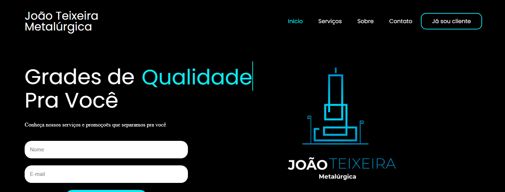

EU SOU FRANILDO
Um desenvolvolvedor front-end.
 10.24.11_95caf980.jpg)
Olá.
Eu sou programador front-end, formado em Análise e Desenvolvimento de Sistemas (2023).
Tenho 27 anos e meu
hobby é toca guitarra. Trabalho com HTML, CSS, Bootstrap e Javascript e desenvolvo com meu amigo gato🐱.
Meu Projeto
JT Metalúrgica
Web site completo e resposivo desenvolvido com HTML, CSS para um cliente de uma metalúrgica.
Foi utilizado animação, várias páginas de navegação e catalágos de serviços. Mais em breve
Minhas Habilidades

Desenvolvimento
Comecei a estular lógica no celular com o Gustavo Guanabara porque me sentia Albert Einstein. E como é prazeroso resolver problemas.

Desafios
Minhas melhores habilidades são com html e css onde já realizei freelacer trasfomando uma tabela excel para html e css e desenvolvi um web site completo pra cliente fictício.